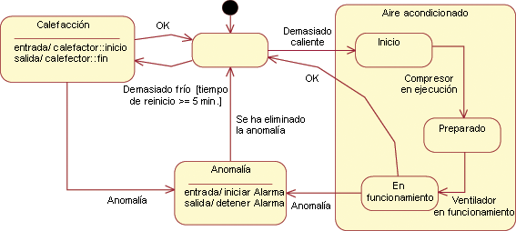
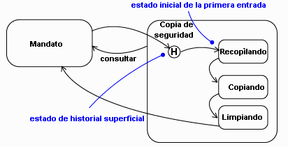

| Directriz: Ideas de prueba para diagramas de gráfico y diagramas de flujo |
 |
|
| Elementos relacionados |
|---|
IntroducciónEn esta directriz se muestra cómo identificar ideas de prueba de diagramas de gráfico y otras estructuras de diseño que constan, básicamente, de nodos conectados por medio de arcos, y muestran parte de los flujos de control posibles de un programa. El objetivo principal de esta prueba es cruzar todos los arcos en una prueba determinada. Si nunca ha ejecutado un arco, ¿por qué piensa que va a funcionar cuando lo ejecute un cliente? Prueba de la implementaciónConsidere este diagrama de estado:  Figura 1: Diagrama de estado de HVAC Esta es la primera lista de ideas de prueba:
Todas estas ideas se pueden ejecutar en una sola prueba, o bien, se pueden crear varias pruebas y que cada una ejecute unas cuantas. Como todo el diseño de prueba, procure conseguir un equilibrio entre la facilidad de implementación de varias pruebas simples y la posibilidad de búsqueda de defectos adicionales de las pruebas complejas. (Consulte el apartado "diseño de pruebas utilizando la lista" de la página Concepto: Lista de ideas de prueba). Si tiene casos de ejemplo de guiones de uso que describan vías de acceso determinadas a través del diagrama de estado, debe privilegiar las pruebas que tomen dichas vías de acceso. En cualquier caso, las pruebas deben comprobar que todas las acciones que necesita el diagrama de estado se llevan a cabo realmente. Por ejemplo, ¿se inicia la alarma al entrar en el estado Anomalía y se detiene al salir? La prueba también debe comprobar que la transacción conduzca al siguiente estado correcto. Puede ser un problema difícil cuando los estados son invisibles desde fuera. El único modo de detectar un estado incorrecto es inyectar alguna secuencia de sucesos que conduzca a la salida incorrecta. Con mayor precisión, debe construir una secuencia de seguimiento de los sucesos cuyos resultados visibles externamente para el estado correcto difieran de los que provoca la misma secuencia a partir de cada estado incorrecto posible. En el ejemplo anterior, ¿cómo podría saber que el suceso Anomalía resuelta del estado Anomalía conduce correctamente al estado Desocupado, en lugar de permanecer en el estado Anomalía? Puede confiar en que al detener la Alarma, la transición se ha llevado a cabo, pero quizá sería mejor comprobarlo bajando la temperatura lo suficiente como para que se encienda el calentador o subirla lo bastante como para que se active el enfriamiento. En este caso, estaría más seguro de que la transición es correcta. Si no sucede nada, es probable que el dispositivo se mantenga en el estado Anomalía. Determinar si el estado resultante es correcto complica, por lo menos, el diseño de la prueba. Con frecuencia, es mejor explicitar la máquina de estado y convertir sus estados en visibles para los verificadores. Otras construcciones de diagramas de estadoLos diagramas de estado constan de algo más que arcos y flechas. A continuación se incluye una lista de las construcciones de diagramas de estado y el efecto que tienen en la lista de ideas de prueba. Acciones de sucesos, acciones de entrar y acciones de salirEstas acciones no generan ideas de prueba en sí mismas. En vez de ello, las pruebas deben comprobar que las acciones se comporten tal como se ha especificado. Si las acciones representan programas importantes, dichos programas se deben probar. Las ideas de prueba para los programas se pueden combinar con ideas de prueba del diagrama de estado pero, probablemente, sea más gestionable separarlos. Tome la decisión en base al esfuerzo implicado, y en la sospecha de que puede haber interacciones entre los sucesos. Es decir, si una acción determinada en un arco no puede compartir datos con una acción de otro arco, no hay motivo para ejecutar ambas acciones en la misma prueba (como sí la habría si fueran parte de la misma vía de acceso a través de una prueba del diagrama de estado). Condiciones de vigilanciaLas condiciones de vigilancia son expresiones booleanas. Las ideas de prueba para las condiciones de vigilancia derivan de las que se describen en el apartado Directriz de Producto de trabajo: Ideas de prueba para booleanos y límites. En el ejemplo anterior, la transición Demasiado frío del estado Desocupado se vigila con [tiempo de reinicio >= 5 minutos]. Esto conduce a dos ideas de prueba separadas:
En ambos casos, cualquier prueba que utilice la idea de prueba debe comprobar que se alcance el estado correcto. Transiciones internasUna transición interna añade el mismo tipo de ideas a una idea de prueba que una transición externa. Se trata, simplemente, de que el estado siguiente sea el mismo que el estado original. Sería prudente establecer la prueba de modo que las acciones de entrar y salir del estado causaran un efecto visible si se desencadenaran de modo incorrecto. Estados anidadosCuando construya pruebas, establézcalas de modo que los sucesos de entrada y salida del estado compuesto tengan efectos visibles. Lo que se desea es observar si se saltan. Subestados concurrentesLa prueba de concurrencia se sitúa fuera del ámbito de prueba del desarrollador. Sucesos diferidosSi sospecha que un suceso se puede manejar de modo diferente en función de si se ha diferido y puesto en cola, en lugar de generarse mientras el programa se encuentra, en realidad, en el estado receptor, puede probar ambos casos. Si el suceso del estado receptor tiene una condición de vigilancia, considere las ramificaciones de cambios a las variables de la condición entre el tiempo en el que se ha generado el suceso y el tiempo en el que se ha recibido. Si más de un estado puede manejar un suceso diferido, puede probar la condición de diferido para cada uno de los estados receptores posibles. Es posible que la implementación dé por supuesto que el estado "obvio" va a manejar el suceso. Estados de historialA continuación, se incluye un ejemplo de un estado de historial:  Figura 2: Ejemplo de estado de historial La transición al estado de historial representa tres transiciones reales y, por lo tanto, tres ideas de prueba:
Estados de cadenaLos estados de cadena parecen no tener implicaciones en el diseño de prueba, excepto que presentan más acciones que se deben comprobar. Prueba del diseñoEl tema anterior se centra en comprobar si la implementación coincide con el diseño. Pero el diseño también puede ser incorrecto. Cuando examine el diseño para buscar ideas de prueba, compruebe también dos tipos de problemas: Sucesos que faltan. El diagrama de estado muestra la respuesta de un estado a sucesos que el diseñador ha previsto que podían llegar a dicho estado. No se debe ignorar que los diseñadores pueden pasar suceso por alto. Por ejemplo, en este diagrama de estado (repetido desde la parte superior de la página), es posible que el diseñador se haya olvidado de que se puede producir una anomalía en el subestado Preparado de Enfriando, no sólo cuando el ventilador está en ejecución.
Figura 3: Diagrama de estado de HVAC Por este motivo, es aconsejable preguntar, para cada estado, si alguno de los elementos que se aplica a otros estados se puede aplicar también a este. Si descubre alguno que sí se aplique, corrija el diseño. Faltan condiciones de vigilancia o están incompletas. De forma similar, es posible que las condiciones de vigilancia de una transición sugieran condiciones de vigilancia en otras transiciones. Por ejemplo, en el diagrama de estado anterior se procura no reiniciar el calentador con demasiada frecuencia, pero no existe tal restricción en el sistema de enfriamiento. ¿Debería estar? También es posible que las variables utilizadas en una condición de vigilancia sugieran que otras condiciones de vigilancia son demasiado simples. Prueba de interaccionesLa prueba de cada arco de un gráfico no es, en modo alguno, una prueba completa. Por ejemplo, suponga que el estado de arranque inicializa una variable 0, el estado Especificador la establece en 5, y el estado Divisor la divide por 100 (variable/100). Si hay una vía de acceso del estado de arranque al Divisor que no pasa a través de Especificador, tiene una excepción de dividir por cero. Si el diagrama de estado tiene varios estados, al ejecutar sólo cada arco es posible que falte dicha vía de acceso. Excepto en el caso de los diagramas de estado muy sencillos, es poco viable probar cada vía de acceso. En la práctica, las pruebas complejas que corresponden a casos de ejemplo de guiones de uso suelen ser suficientes. Si desea pruebas más completas, considere la necesidad de una vía de acceso de cada estado donde los datos tengan un valor para cada estado que los utilice. |
© Copyright IBM Corp. 1987, 2006. Reservados todos los derechos. |